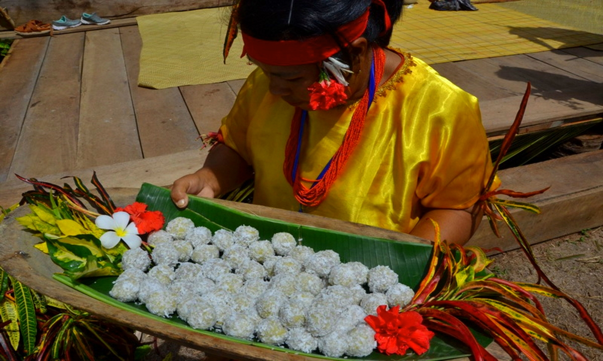
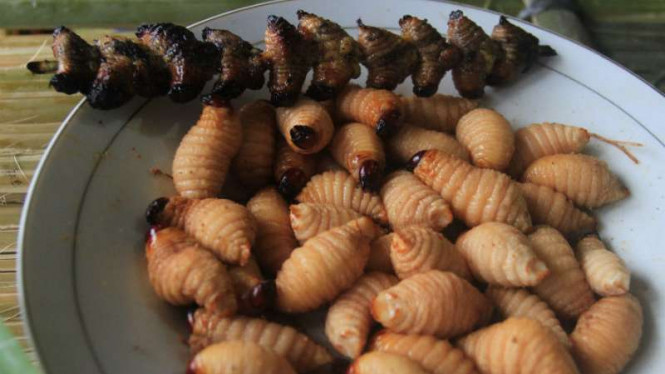

-
Anggau

Anggau merupakan sejenis kepiting yang ditemukan di Kepulauan
Mentawai. Biasanya masyarakat hanya merebus anggau lalu dicampur
dengan bumbu-bumbu seadanya. Anggau diakui sangat enak meski diolah
dengan sangat sederhana. Kepiting anggau merupakan endemik Mentawai.
Kepiting jenis ini memiliki ciri-ciri bercangkang warna ungu, badang
hitam, kaki dan capit kemerahan. Anggau dipanen dalam dalam satu
kali biasanya pada bulan Agustus hingga September.
-
Subbet

Sebuah danau yang dikelilingi oleh pohon-pohon menghijau, adalah sajian utama Anda di sini. Begitu
melihatnya, Anda pasti terkagum dan tidak ingin cepat-cepat pergi dari sini. Duduklah sejenak dipinggiran
Danau Rua Oinan, untuk menyatu dengan alam dan mengusir segala penat didalam pikiran, bersama hembusan angin
sepo-sepoi yang senantiasa setia menemani Anda.
-
Batra

Ulat sagu bisa dimakan langsung atau digoreng tanpa minyak dan dibakar dalam bambu atau dikeringkan. Rasanya
mirip jagung rebus karena makanan batra ini hanya pati sagu. Batra dihasilkan dari batang sagu yang paling
muda di bagian ujung. Batang pohon sagu dibelah, satu sisi batangnya dibiarkan terbuka dengan memberi ganjalan
sebilah kayu agar tawon besar (Rynchoporus ferrungineus) bertelur di celah batang mengandung sagu yang
perlahan-lahan meragi.